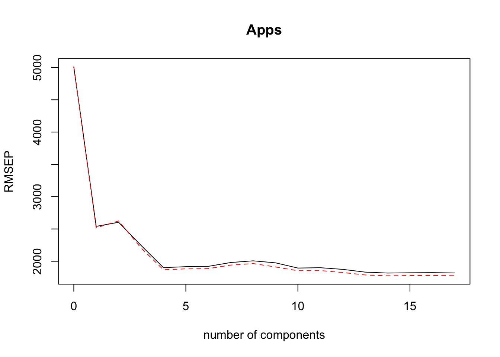

ML
Harrison Tietze
1 Regression Models
1.1 glmnet
In this analysis we will work with the “College” dataset, which contains 777 observations with 18 variables. The goals is to predict how many applications a college will recieve “Apps” based off other predictors.
First examine the structure of the dataset:
str(College)## 'data.frame': 777 obs. of 18 variables:
## $ Private : Factor w/ 2 levels "No","Yes": 2 2 2 2 2 2 2 2 2 2 ...
## $ Apps : num 1660 2186 1428 417 193 ...
## $ Accept : num 1232 1924 1097 349 146 ...
## $ Enroll : num 721 512 336 137 55 158 103 489 227 172 ...
## $ Top10perc : num 23 16 22 60 16 38 17 37 30 21 ...
## $ Top25perc : num 52 29 50 89 44 62 45 68 63 44 ...
## $ F.Undergrad: num 2885 2683 1036 510 249 ...
## $ P.Undergrad: num 537 1227 99 63 869 ...
## $ Outstate : num 7440 12280 11250 12960 7560 ...
## $ Room.Board : num 3300 6450 3750 5450 4120 ...
## $ Books : num 450 750 400 450 800 500 500 450 300 660 ...
## $ Personal : num 2200 1500 1165 875 1500 ...
## $ PhD : num 70 29 53 92 76 67 90 89 79 40 ...
## $ Terminal : num 78 30 66 97 72 73 93 100 84 41 ...
## $ S.F.Ratio : num 18.1 12.2 12.9 7.7 11.9 9.4 11.5 13.7 11.3 11.5 ...
## $ perc.alumni: num 12 16 30 37 2 11 26 37 23 15 ...
## $ Expend : num 7041 10527 8735 19016 10922 ...
## $ Grad.Rate : num 60 56 54 59 15 55 63 73 80 52 ...The variables are numeric, except for the factor: Private. Let’s build a model matrix that automatically creates dummy variables, which is important because glmnet only accepts numeric variables.
X = model.matrix(Apps ~ ., data = College)
Y = College$Apps
data_df <- cbind(as.data.frame(X), College[, "Apps"]) %>% rename(Apps = `College[, "Apps"]`)Since we will be testing the performance of multiple models, we need to split the data into a test and training set.
train <- sample(1:nrow(X), replace = FALSE, round(nrow(X) * .25))
X.train <- X[train, ]
Y.train <- Y[train]
X.test <- X[-train, ]
Y.test <- Y[-train]Let’s fit a least-squares regression, which can be done using glmnet and no further arguments. The 17 coefficients of the least-squares regression model are fit by minimizing the RSS, the sum of squared residuals.
OLS.mod <- glmnet(X.train, Y.train)
OLS.pred <- predict(OLS.mod, newx = X.test)
RMSE <- function(x){sqrt(sum((x-Y.test)^2))/length(x)}
Percent.Error <- function(x){RMSE(x)/mean(Y) * 100}
OLS.RMSE <- RMSE(OLS.pred)
OLS.Percent.Err <- Percent.Error(OLS.pred)
results <- tibble(model = "OLS",
RMSE = OLS.RMSE,
)
knitr::kable(results, digits = 3)| model | RMSE |
|---|---|
| OLS | 6.595 |
The RMSE can be interpreted as an estimate for the standard deviation of predicted values. In the context of our College data, given a new set of observations, we could estimate the amount of applications a college will receive, give or take 7.6 apps. The percent error, given by the RMSE over the average value of Y, gives an estimate of percent average deviation of our prediction. This helps interpret the error, given the average college receives 3002 and our percent error is 0.2197004%, we can infer our error is overall relatively small.
1.2 Ridge Regression
Ridge regression fits a linear model by minimizing the quanitity \(RSS + \lambda \sum_{j=1}^p\beta_j^2\), where \(\lambda \sum_{j=1}^p\beta_j^2\) also written \(\lambda||\beta||^2\) is called a shrinkage penalty and \(\lambda \geq 0\) is called a tuning parameter. At the extremes, \(\lambda = 0\) returns the least-squares estimate, and \(\lambda \rightarrow \infty\) returns the null model, where all the predictors are forced to \(0\). Note, that shrinkage is not applied to the intercept. Instead we first center the inputs and then estmiate \(\beta_0\) by \(\overline{y}\). Centering is also necessary because unlike in OLS, the scale of the predictors can influence the estimate. Centering predictors is done by dividing by their standard deviation: \(\tilde{x_{ij}} = \frac{x_{ij}}{\sqrt{\sum_{i=1}^N(x_{ij}-\overline{x_j})^2}}\). The \(\tilde{x_{ij}}\) are called standardized predictors and are used to compute standardized coefficients.
Unlike the least squares estimate which produces only one set of coefficients, ridge regression computes a path of coefficients \(\beta^R_{\lambda}\) which is a \(p-\)dimensional sequence indexed by \(\lambda\). Cross validation must be used the to select the \(\lambda\) such that \(\beta^R_{\lambda}\) minimizes the out-of-sample error.
Let’s fit a ridge regression. Also, we can manually specify a grid of values for \(\lambda\):
grid <- 10^ seq (10,-2, length =100)
ridge.mod <- glmnet(X.test, Y.test, alpha = 0, lambda = grid)
# alpha = 0 specifies that we are using a Ridge Regression.
# glmnet automatically does centering first; Standardize = TRUE by defaultThe glmnet object has several useful accessor methods that return information about the model. coef returns a matrix of coefficients. There are 19 rows, one for each coefficient, and 100 columns corresponding to different lambda values.
dim(coef(ridge.mod))## [1] 19 100The lambda attribute returns the lambda values we generated. Let’s looks at the coefficients calculated for the 10th, 50th, and 90th lambda.
el2norm <- function(x){sqrt(sum(x^2))}
el2norm.r <- function(col){el2norm(coef(ridge.mod)[, col])}
coef(ridge.mod)[,c(10,50,90)] %>% rbind( map_dbl(c(10,50,90), el2norm.r) ) %>% rbind(ridge.mod$lambda[c(10,50,90)])## 21 x 3 sparse Matrix of class "dgCMatrix"
## s9 s49 s89
## (Intercept) 3.001460e+03 -1.458263e+03 -450.12509864
## (Intercept) . . .
## PrivateYes -1.789027e-02 -4.648071e+02 -494.38698125
## Accept 7.103069e-06 2.489066e-01 1.58314568
## Enroll 1.681834e-05 5.134601e-01 -0.86900691
## Top10perc 3.544599e-04 9.530257e+00 49.79963953
## Top25perc 3.276538e-04 7.841425e+00 -14.15596655
## F.Undergrad 3.098810e-06 9.162011e-02 0.05640780
## P.Undergrad 4.827473e-06 1.103401e-01 0.04442850
## Outstate 2.300851e-07 7.305875e-03 -0.08570968
## Room.Board 2.775406e-06 9.438862e-02 0.15145333
## Books 1.481607e-05 3.409711e-01 0.02115933
## Personal 4.871357e-06 9.181531e-02 0.03090023
## PhD 4.415587e-04 8.323631e+00 -8.66418687
## Terminal 4.631391e-04 8.360791e+00 -3.33962422
## S.F.Ratio 4.458416e-04 1.112056e+01 15.39869024
## perc.alumni -1.343654e-04 -5.211799e+00 0.13310284
## Expend 9.174057e-07 2.860713e-02 0.07795514
## Grad.Rate 1.576579e-04 5.769915e+00 8.68071987
## 3.001460e+03 1.530703e+03 670.90498961
## 8.111308e+08 1.149757e+04 0.16297508The last two rows are the l-2-norm and the \(\lambda\) value. We can see that for \(\lambda = .16\) we have the highest shrinkage of the coefficients
We can also use the predict method to estimate coefficients at a new value of \(\lambda\), say \(\lambda = 80\)
predict(ridge.mod, s=80, type="coefficients")## 19 x 1 sparse Matrix of class "dgCMatrix"
## 1
## (Intercept) -842.54145642
## (Intercept) .
## PrivateYes -511.92401570
## Accept 1.36629641
## Enroll -0.22883111
## Top10perc 39.62013832
## Top25perc -7.76407057
## F.Undergrad 0.03611710
## P.Undergrad 0.03576975
## Outstate -0.06314725
## Room.Board 0.17405745
## Books 0.05510074
## Personal 0.01487869
## PhD -7.06756018
## Terminal -4.38993870
## S.F.Ratio 15.11353972
## perc.alumni -3.52229120
## Expend 0.07919428
## Grad.Rate 9.62239114Let’s also look a the %Dev column when we print our model directly.
# print(ridge.mod) output is too long%Dev is the Null Deviance of the model. If the Null Deviance is very small, it signifies that the proposed model does not perform better than the null model. We can see that when lambda is very high, the %Dev is almost 0, but increases as lambda decreases, and the penalty on the coefficients is relaxed.
Rather than supplying a pre-defined grid, we can use cross-validation to select the best lambda. The function cv.glmnet not only fits 100 models, but it tells us which one is the best.
set.seed(10)
ridge.cv <- cv.glmnet(X.train, Y.train, alpha = 0)
ridge.pred <- predict(ridge.cv, s="lambda.min", newx = X.test)
ridge.RMSE <- RMSE(ridge.pred)
bestlam <- ridge.cv$lambda.minHere cv.glmnet uses 10-fold cross validation (by default) and returns a cv.glmnet object containing a sequence of models. The model that miminimized the MSE can be found using lambda.min. Here the best lambda is 485.847 and its corresponding estimate of the test error is 44.633. We could access the coefficients of this model by calling coef(ridge.cv, s = "lambda.min") and calculate their l-2-norm 1550.27.
1.3 The Lasso
The Lasso is similar to ridge regression, except that the penalty is applied to the l-1-norm norm of the coeffiecients: \(||\beta||_1\). That is, the lasso selects the best model by minimizing the quantity \(RSS + \lambda\sum_{j=1}^p|\beta_j|\). Unlike Ridge regression, however, the lasso shrinks some of the coefficients to zero, and thus performs variable selection. The advantage of the lasso is that it yields sparse models with less coefficients are easier to interperet.
set.seed(1)
lasso.cv <- cv.glmnet(X.train, Y.train, alpha = 1)
lasso.lam <- lasso.cv$lambda.min
coef(lasso.cv, s = "lambda.min")## 19 x 1 sparse Matrix of class "dgCMatrix"
## 1
## (Intercept) 69.34902528
## (Intercept) .
## PrivateYes -595.64358292
## Accept 1.86593908
## Enroll -0.34992361
## Top10perc 57.22930932
## Top25perc -18.46259680
## F.Undergrad -0.18922923
## P.Undergrad 0.06772948
## Outstate -0.15971823
## Room.Board 0.05447433
## Books -0.45883492
## Personal 0.13779185
## PhD -13.57517691
## Terminal 0.79909250
## S.F.Ratio 5.10482889
## perc.alumni 4.09874698
## Expend 0.14168984
## Grad.Rate 12.80833938lasso.mod <- glmnet(X.train, Y.train, alpha = 1, lambda = grid)
lasso.pred <- predict(lasso.mod, s=lasso.lam, newx = X.test)We can see that some of the variables have been dropped.
lasso.RMSE <- RMSE(lasso.pred)
results <- rbind(results, list("Ridge", ridge.RMSE), list("Lasso", lasso.RMSE))
knitr::kable(results, digits = 3)| model | RMSE |
|---|---|
| OLS | 6.595 |
| Ridge | 44.633 |
| Lasso | 49.003 |
For some reason, the ridge and lasso perform substantially worse than the ordinary least squares model.
1.4 Principle Components Regression
library(pls)
set.seed(2)
PCR.mod <- pcr(Apps ~ ., subset = train, data = data_df, validation = "CV")
validationplot(PCR.mod, val.type = "MSEP")
The validation plot compares the performance of PCR based off the number of components that are chosen. The MSEP axis is actually the RSME used to measure the training error. The error stabilizes around 5 or 6 components, and overall decreases monotonically as we include more components. Using all components would defeat the purpose of PCR and actually return the OLS solutions, where each variable is its own component.
summary(PCR.mod)## Data: X dimension: 194 18
## Y dimension: 194 1
## Fit method: svdpc
## Number of components considered: 18
##
## VALIDATION: RMSEP
## Cross-validated using 10 random segments.
## (Intercept) 1 comps 2 comps 3 comps 4 comps 5 comps 6 comps
## CV 4686 4699 2764 2763 2798 2260 1541
## adjCV 4686 4732 2747 2747 2807 2171 1515
## 7 comps 8 comps 9 comps 10 comps 11 comps 12 comps 13 comps
## CV 1511 1524 1558 1456 1438 1440 1468
## adjCV 1489 1501 1532 1433 1415 1417 1443
## 14 comps 15 comps 16 comps 17 comps 18 comps
## CV 1475 1433 1440 1396 NaN
## adjCV 1450 1408 1414 1372 NaN
##
## TRAINING: % variance explained
## 1 comps 2 comps 3 comps 4 comps 5 comps 6 comps 7 comps
## X 47.7637 85.35 93.30 97.18 98.83 99.59 99.93
## Apps 0.1278 73.09 73.84 79.71 93.85 93.97 93.99
## 8 comps 9 comps 10 comps 11 comps 12 comps 13 comps 14 comps
## X 99.97 100 100.00 100.00 100.0 100.0 100.0
## Apps 93.99 94 94.59 94.78 94.8 94.8 94.8
## 15 comps 16 comps 17 comps 18 comps
## X 100.00 100.00 100.00 100
## Apps 95.23 95.25 95.35 100The summary which reveals the training error and variance explained per number of components included, further shows that including more than 6 components gives no benefit. However it may be best to use even less components to create a better model. Three components should work, since it explains 93% of the variance.
PCR.pred <- predict(PCR.mod, X.test, ncomp = 3)
PCR.RMSE <- RMSE(PCR.pred)
results <- rbind(results, list("PCR", PCR.RMSE))
knitr::kable(results, digits = 3)| model | RMSE |
|---|---|
| OLS | 6.595 |
| Ridge | 44.633 |
| Lasso | 49.003 |
| PCR | 66.753 |
1.5 Partial Least Squares
Partial least sqaures is a supervised alternative to principle components regression. PLS attempts to choose components that explain variance in both the predictors and response.
PLS.mod <- plsr(Apps ~ ., data = data_df, subset = train, validation = "CV")
summary(PLS.mod)## Data: X dimension: 194 18
## Y dimension: 194 1
## Fit method: kernelpls
## Number of components considered: 18
##
## VALIDATION: RMSEP
## Cross-validated using 10 random segments.
## (Intercept) 1 comps 2 comps 3 comps 4 comps 5 comps 6 comps
## CV 4686 2684 2550 2166 1748 1602 1581
## adjCV 4686 2649 2365 2128 1719 1573 1554
## 7 comps 8 comps 9 comps 10 comps 11 comps 12 comps 13 comps
## CV 1604 1680 1693 1566 1611 1593 1555
## adjCV 1575 1646 1651 1534 1574 1555 1520
## 14 comps 15 comps 16 comps 17 comps 18 comps
## CV 1547 1555 1564 1556 1556
## adjCV 1513 1521 1529 1521 1521
##
## TRAINING: % variance explained
## 1 comps 2 comps 3 comps 4 comps 5 comps 6 comps 7 comps
## X 37.56 47.72 88.66 95.05 98.82 99.56 99.92
## Apps 75.75 87.97 90.26 93.04 93.97 93.99 94.00
## 8 comps 9 comps 10 comps 11 comps 12 comps 13 comps 14 comps
## X 99.97 99.97 100.00 100.00 100.00 100.00 100.00
## Apps 94.04 94.63 94.81 94.97 95.23 95.24 95.24
## 15 comps 16 comps 17 comps 18 comps
## X 100.00 100.00 100.00 102.90
## Apps 95.25 95.25 95.35 95.35validationplot(PLS.mod)
We can see that 3 components explains about 93% of the variance and gives a low training RMSE. It’s better to keep the amount of components lowe to decrease the variance of the model, even if more components give slightly lower training RMSE.
PLS.pred <- predict(PLS.mod, X.test, ncomp = 3)
PLS.RMSE <- RMSE(PLS.pred)
results <- rbind(results, list("PLS", PLS.RMSE))
knitr::kable(results, digits = 3)| model | RMSE |
|---|---|
| OLS | 6.595 |
| Ridge | 44.633 |
| Lasso | 49.003 |
| PCR | 66.753 |
| PLS | 52.771 |
Since PLS supervises the choice of components, it can be more effective than PCR for a regression problem when using less components. Notice how the RMSE at 1 component is alsmost 3 times that for PCR than PLS, but it becomes about equal for the inclusion of more components.
2 Simplifying with Caret
In this section, I write a function using caret to train all the models at once. Each model’s parameters is optimized by cross validation automatically, as specified in the trainControl function.
library(caret)
caret_RMSE <- function(x){sqrt(sum((x-Y.test)^2))/length(x)}
trainControl <- trainControl(method="cv", number=5)
my_caret <- function(method_name){
#this function accepts the name of the method and returns its RMSE from testing it on our specified College dataset
method_fit <- train(Apps~., data=data_df, method=method_name, metric="RMSE", preProc=c("center","scale"), trControl=trainControl)
method_predictions <- predict(method_fit, X.test)
method_RMSE <- caret_RMSE(method_predictions)
list(method_name, method_RMSE)
}
caret_names <- list("lm", "lasso", "ridge", "glmnet", "pcr", "pls")Now I write a short pipeline to run the my_caret function on the list of method names and display the results in a nice table.
map(caret_names, my_caret) %>%
transpose() %>%
map(unlist) %>%
set_names(c("models","RMSE")) %>%
as_tibble() %>%
arrange(RMSE)->
caret_table
knitr::kable(caret_table, digits = 3, booktabs = TRUE, caption = "Result produced by Caret. Models arranged by RMSE.")| models | RMSE |
|---|---|
| lasso | 40.884 |
| glmnet | 40.895 |
| lm | 40.956 |
| ridge | 40.956 |
| pls | 47.444 |
| pcr | 70.510 |
The results are quite similar to running each model individually. The ridge and lasso are slightly better, probably because the caret algorithm picked a better lambda. However there is a noticable discrepancy between the original least squares call, which is noticably better than all other methods, and this least-squares call, which is comparable to other regression methods.